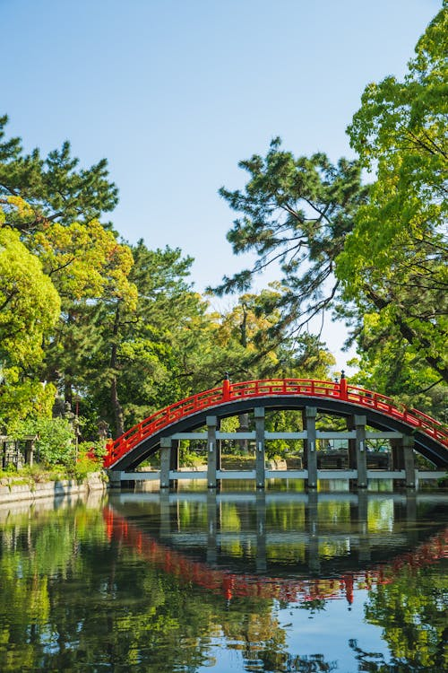
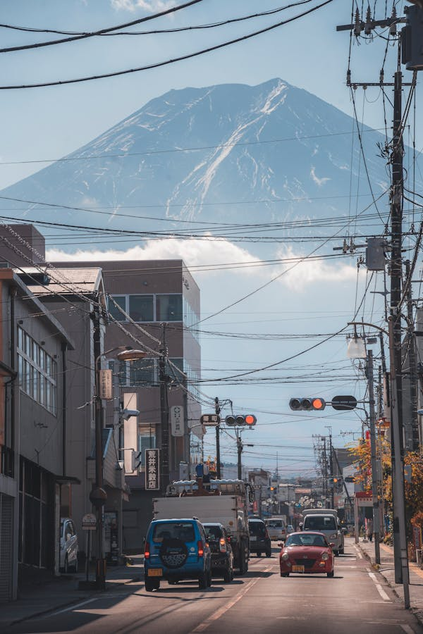
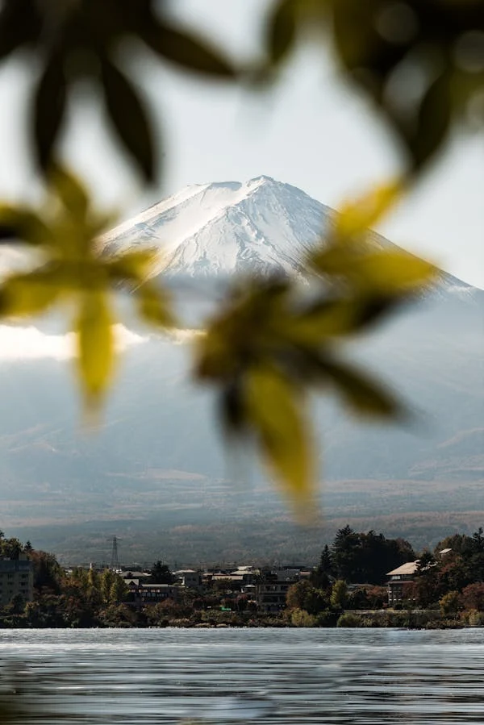

Lake Kawaguchi, located near Mount Fuji, is one of the Fuji Five Lakes and a popular destination for nature lovers and tourists. The lake offers breathtaking views of Mount Fuji, especially on clear days, creating a picturesque backdrop that attracts photographers and artists. Visitors can enjoy a variety of activities, including boating, fishing, and hiking along the scenic trails that surround the lake. The area is also known for its hot springs and traditional ryokan inns, providing a relaxing retreat with stunning natural beauty. Seasonal attractions, such as cherry blossoms in spring and vibrant foliage in autumn, enhance the lake's charm.
Hiromi Park

Hiromi Park, situated in Fujiyoshida City near Lake Kawaguchi, is a serene and beautifully landscaped park offering a peaceful escape with panoramic views of Mount Fuji. The park features spacious lawns, walking paths, and well-maintained flower beds, making it an ideal spot for picnics, leisurely strolls, and outdoor activities. One of the highlights of Hiromi Park is its cherry blossom grove, which attracts visitors each spring when the trees are in full bloom, creating a breathtaking sea of pink petals. The park's tranquil atmosphere and picturesque setting make it a popular destination for both locals and tourists seeking a quiet retreat.
Oishi Park


Oishi Park, located on the northern shore of Lake Kawaguchi, is renowned for its stunning flower displays and panoramic views of Mount Fuji. The park is famous for its seasonal gardens, particularly the lavender fields that bloom in early summer, filling the air with a fragrant aroma and creating a vivid purple landscape. In addition to lavender, Oishi Park features a variety of flowers throughout the year, including tulips, cosmos, and kochia. The park also offers walking paths, a small museum, and a lakeside café where visitors can relax and enjoy the scenery. Oishi Park's vibrant floral displays and serene environment make it a must-visit destination for nature enthusiasts.